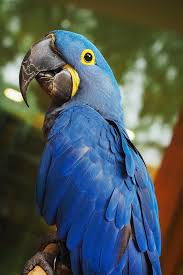
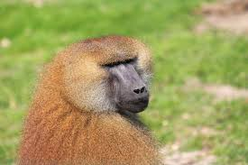

Notícias da semana
Cachorro local ataca a vizinhança em pretexto de proteger o dono e acaba por matar seu proprio dono.

"Jerry já nos abençoou apenas com a graça de sua existência no nosso mundo material" - diz adorador de Jerry antes de cair convulsionando. Atualmente, os seguidores de Jerry são mais de 50mil pessoas apenas no Brasil e estatísticas afirmam que até 2028 esta será a religião oficial do país.

Horse rei delas lança seu mais novo álbum, "Uma vida de corrida" e tem mais de 30mil acessos no primeiro mês. Uma das musicas mais ouvidas.

Babu das bananeiras, ex líder do trafico de bananas, se recusa e dizer onde ele escondeu os produtos e jogou merda no policial afirmando que o mesmo é maquista. As investigações prosseguem e Babu continuará preso por tempo indeterminado até que o sargento Cadelinha encontre as bananas traficadas.
Alvin, membro antigo da nossa rede, afirma abandonar seu posto e dar ele a seu filho Bambi, que diz "Eu irei orgulhar meu pai."